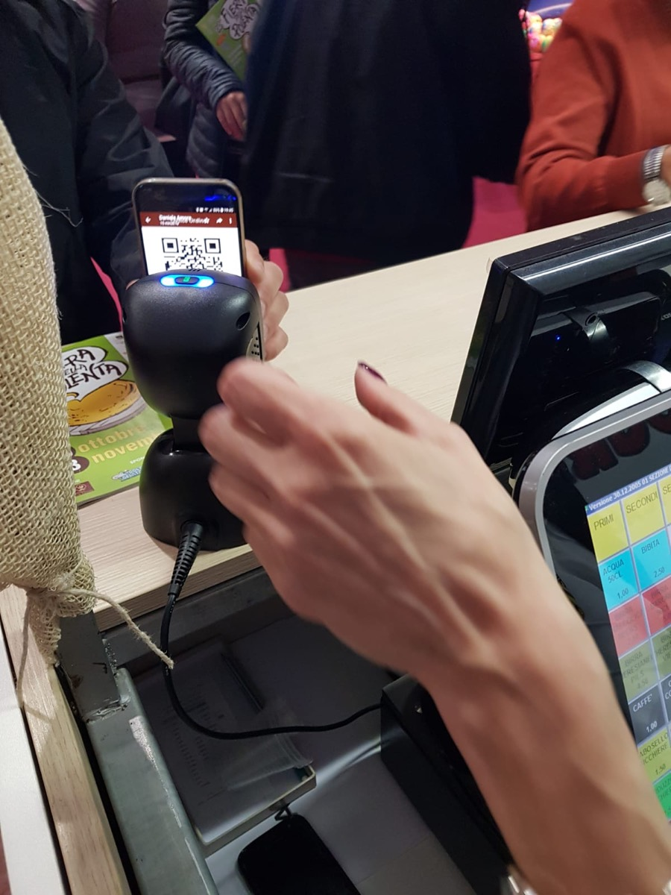
Casse e gestionali per ristoranti, sagre e garden center.
Hardware, software e assistenza da un'unica azienda di Godega di Sant'Urbano (Treviso), dal 2002. In vendita o a noleggio.
AREABYTE S.R.L.
Via Sant'Urbano 60, 31010
Godega di Sant'Urbano (TV)
Tel. 0438 430763
DOCUMENTO DI FIDUCIA
- Gestionali su misura
- dal 2002
- Misuratori fiscali
- dal 2006
- Terminali Android
- dal 2016
- Registratori RT
- dal 2019
- Totem, clienti l'ora
- 80+
- Assistenza 1ª serata
- sul posto
TOTALEtutto sotto controllo
Vendita, noleggio, assistenza
GRAZIE E ARRIVEDERCI
Meno corse tra sala, cucina e cassa.
Quanto tempo se ne va per prendere le ordinazioni, portare la comanda al bar o al forno, fare i conti di fine serata e preparare le fatture? Il sistema touch AreaByte riprende quel tempo e lo restituisce al servizio.
- Comande dal tavolo con i palmari Android: l'ordine parte mentre il cameriere è ancora in sala.
- Ogni reparto riceve solo il suo: stampanti comande in cucina, al forno, al bar.
- Cassa touch a doppio schermo con il misuratore fiscale RT collegato.
- Conti, fatture e buoni pasto gestiti dal gestionale, senza fogli a parte.
- Personale sotto controllo: nessuna comanda dimenticata.
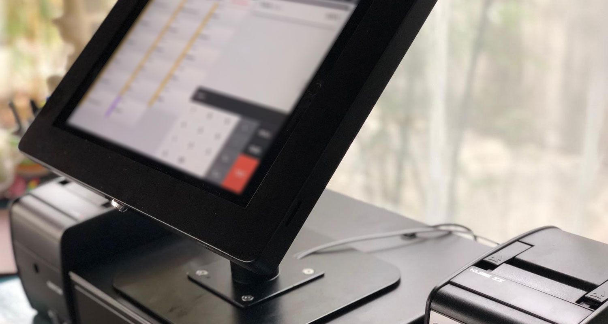
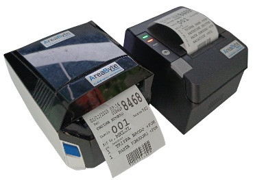
Tu organizzi la sagra. Casse, comande e cucina le portiamo noi.
Formula noleggio per feste di paese, sagre, temporary shop, fiere e attività stagionali. Assistenza sul posto la prima serata, poi al telefono; su richiesta anche sul posto per tutta la manifestazione.
-
Il cliente ordina dal telefono
Inquadra un QR code e compone l'ordine con la WebApp ADA, senza scaricare niente. Il menù si aggiorna in tempo reale con i piatti ancora disponibili.
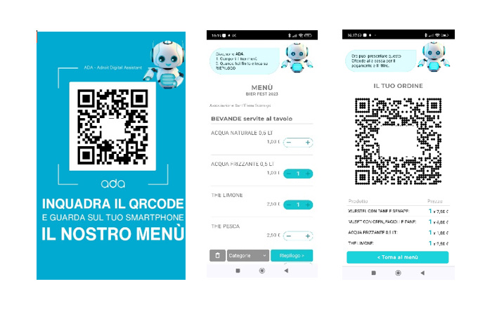
-
Paga in cassa o al totem
Postazione touch a doppio schermo con il vostro menù e il cassetto, oppure il totem con bancomat integrato: oltre 80 clienti l'ora, ricevuta stampata e ordine già smistato.
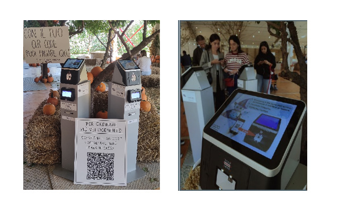
-
La comanda arriva al reparto giusto
Stampanti termiche ad alta velocità con rotoli da 80 mm, una per ogni reparto: cucina, griglia, bar.
-
La cucina vede tutto in tempo reale
Il server cucina mostra i piatti da preparare. Gli ordini serviti si scaricano con il lettore di codici a barre, e la lista si può vedere anche da altri schermi.
-
Lo schermo chiama il numero
Chi non serve al tavolo chiama i piatti pronti su uno schermo gigante, leggendo il codice a barre della comanda. In cassa, lo schermo eliminacode gestisce tutte le casse che servono.
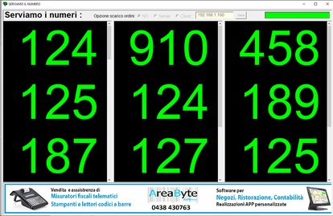
Spazio per gli sponsor
Banner illimitati e personalizzabili sugli schermi di chiamata.
Bancomat a condizioni vantaggiose
Circa 0,49% sui bancomat e 0,75% sulle carte, senza commissioni fisse.
Scontrino in regola
Per chi deve emetterlo, misuratori fiscali RT collegati direttamente al gestionale.
Il gestionale per garden center e vivai.
Distribuiamo un gestionale completo per garden center e vivai: cassa, magazzino, etichette e tessere fedeltà nello stesso sistema, con gli strumenti più tecnologici disponibili.
- Fidelity card per premiare i clienti più affezionati con sconti o buoni spesa, al traguardo che decidi tu.
- Terminalini e lettori ottici: i dati dei prodotti si leggono dalle etichette con il codice a barre.
- Etichette a trasferimento termico con stampanti Zebra e Godex.
- Magazzino sotto controllo: arrivo merce, giacenze, vendite e statistiche del venduto e dell'acquistato.
- Postazioni cassa i5 o i7, dimensionate per strutture piccole e grandi.
Chiedi una demo del gestionale«Da quando mi hanno fornito il nuovo sistema di cassa, l'attività dell'azienda è migliorata in maniera incredibile.»
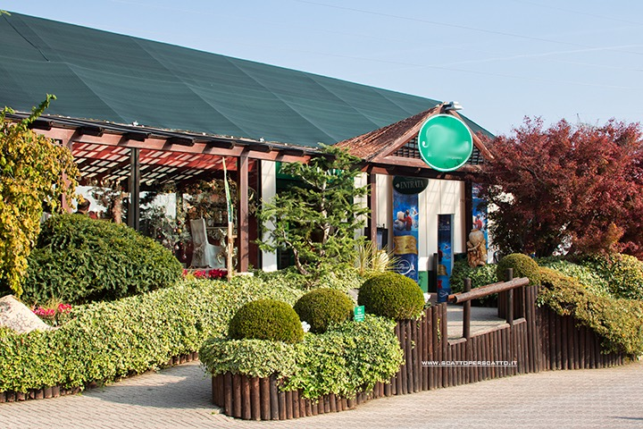
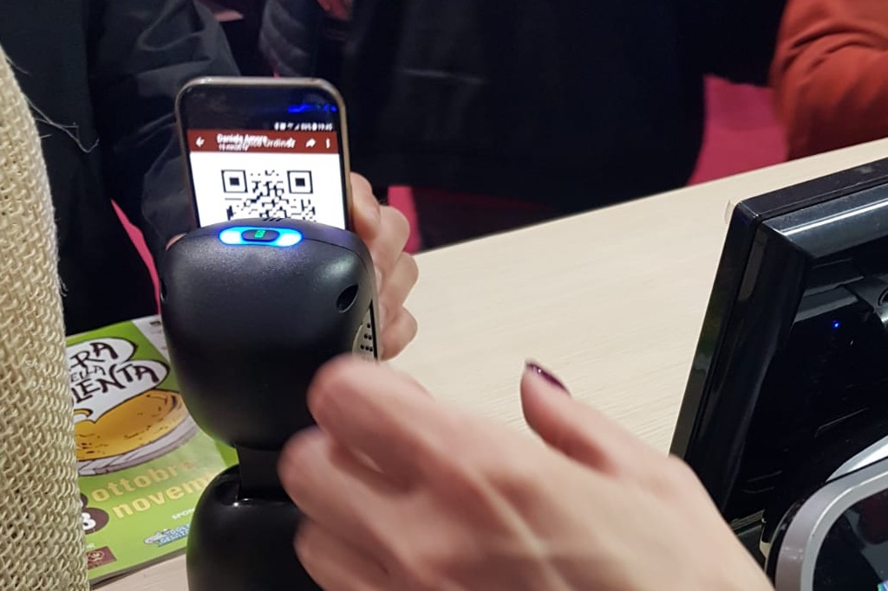
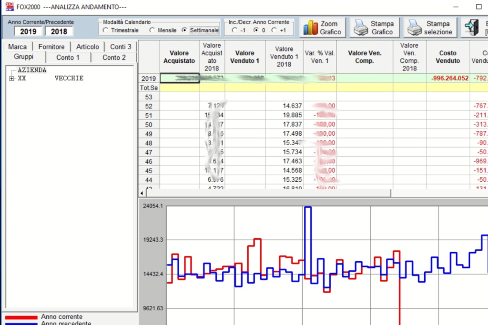
L'hardware giusto, scelto e collegato al gestionale.
Per ristoranti, negozi di ogni genere, garden e magazzini. Ogni prodotto si può acquistare o noleggiare: adattiamo il software e scegliamo l'hardware sulle tue esigenze.
-
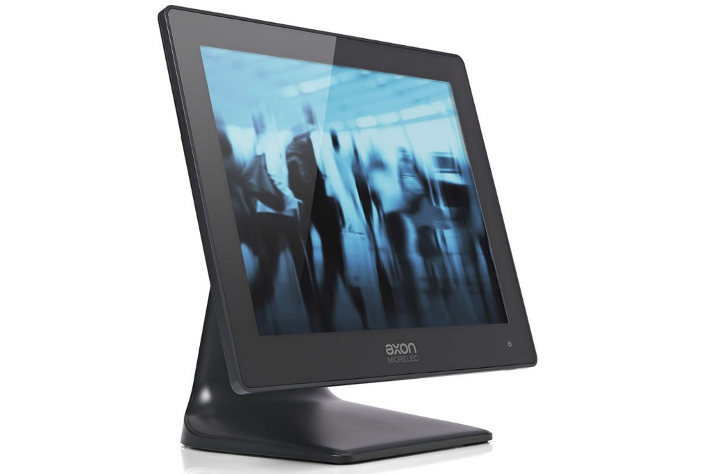
Casse touch screen
Sistemi POS con display multi-touch 4:3 o 16:9, secondo monitor, display cliente e lettore di smart card. Dal piccolo negozio al garden center.
-
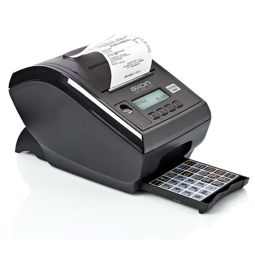
Misuratori fiscali RT
Stampanti fiscali Hydra e registratori Helios di Axon Micrelec, Custom BIG PLUS RT. Anche in versione per ambulanti.
-
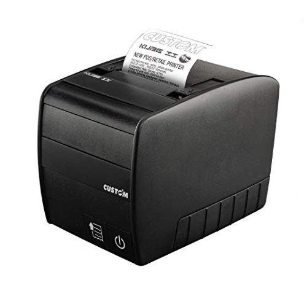
Stampanti comande
Stampanti termiche che portano la comanda direttamente al reparto che la deve preparare.
-
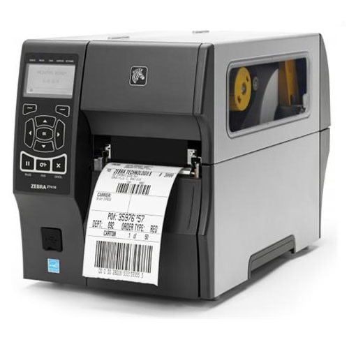
Stampanti etichette
A trasferimento termico, dei migliori marchi come Godex e Zebra.
-
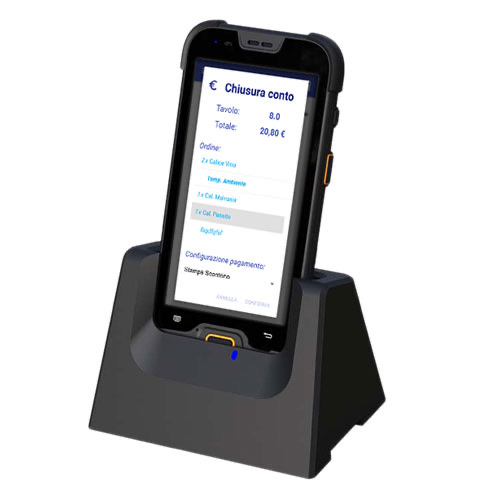
Terminali per magazzino
Terminali Android con laser scanner 2D e app sviluppata sulle tue esigenze. Brand AreaByte dal 2016.
-
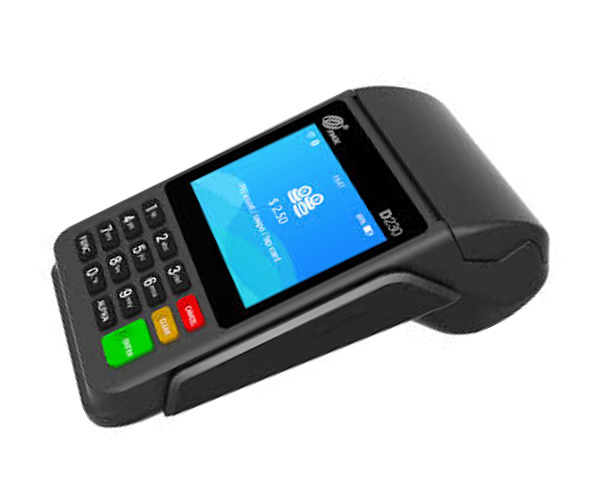
POS per i pagamenti
Bancomat e carte collegati alla cassa, con condizioni vantaggiose sulle transazioni.
E il software, su misura
- Gestionale per la ristorazione con presa comande e sistemi touch.
- Gestionale per garden e negozi con fidelity, magazzino ed etichette.
- App Ordini per gli agenti che inviano gli ordini alla sede, o per i clienti che ordinano dal web.
- WebApp ADA per ordinare con un QR code, senza scaricare niente.
«I terminalini Android sono robusti e semplici da utilizzare.»
Registratori RT: vendita, assistenza e verificazione periodica.
Dal 2006 AreaByte vende e assiste misuratori fiscali come azienda abilitata dall'Agenzia delle Entrate, dal 2019 anche i registratori telematici RT. Il nostro laboratorio si occupa della verificazione periodica con un sistema di gestione per la qualità.
- Invio dei corrispettivi e fattura su scontrino con i modelli omologati.
- Collegamento al gestionale della cassa, al ristorante come in negozio.
- Un solo interlocutore per cassa, software e misuratore.
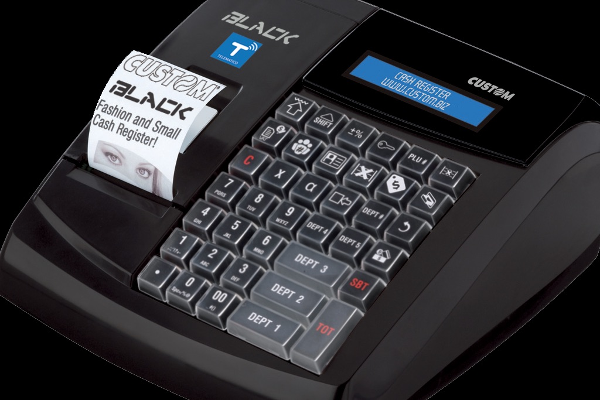
Una software house di Godega, dal 2002.
AreaByte nasce dall'esperienza decennale di chi programmava sistemi gestionali. Oggi Fabiano Coan e il suo team forniscono applicazioni chiavi in mano, affidabili e garantite, a negozi e aziende B2B e B2C.
Lavoriamo dal florovivaismo all'abbigliamento, dalle ferramenta alle officine, dai ricambi alle aziende di produzione: dall'arrivo della merce all'etichettatura, dal magazzino alla vendita, fino alle statistiche per decidere meglio.
- 2002
Nasce AreaByte: software gestionali chiavi in mano.
- 2006
Abilitata dall'Agenzia delle Entrate per vendita e assistenza dei misuratori fiscali.
- 2016
Nasce il brand AreaByte di terminali industriali Android, con app su misura.
- 2019
Arrivano i registratori telematici RT. Con Gestionale Open e Digital Idea nasce la società del software FOXG, con una versione light per negozi e piccole attività.
Raccontaci la tua attività. La consulenza è gratuita.
Ti diciamo quale cassa e quale software servono davvero, e se conviene comprarli o noleggiarli.
Chiama 0438 430763- info@areabyte.it
- Indirizzo
- Via Sant'Urbano 60
31010 Godega di Sant'Urbano (TV) - Orario ufficio
- 9:00–12:30 e 14:00–18:00
giorni [DA CONFERMARE]